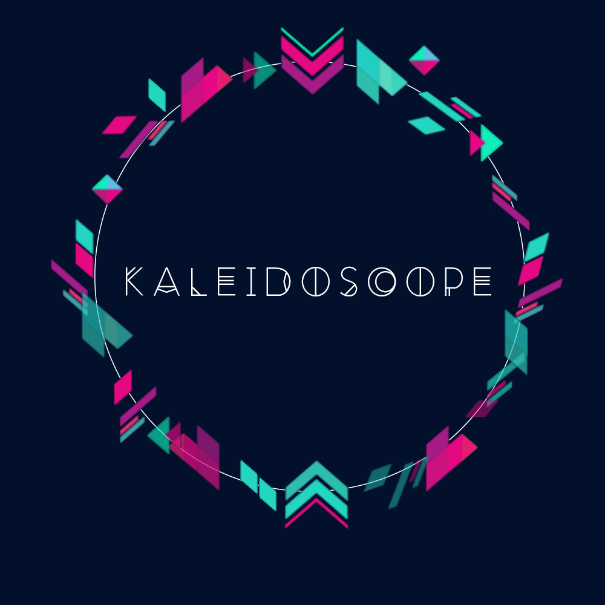

What is APAHM?
Asian Pacific American Heritage Month (APAHM) is a celebration of the culture and history of Asian Americans and Pacific Islanders in the United States. Although APAHM is officially celebrated in the month of May, we celebrate APAHM here on Vanderbilt’s campus in the fall semester from October to early November.
Kaleidoscope
Kaleidoscope represents the different and equally valuable identities and experiences that come together to form a beautiful product : you. Kaleidoscope also represents the unique perspectives that every individual brings to the Vanderbilt community, and we hope to celebrate all these individuals during APAHM 2017.

Events Calendar
Join AASA in our celebration of Asian Pacific American Heritage Month!
Join AASA in kicking off APAHM 2017 with our first event: Crossroads! We're all from different places and we're all going different places, but right now we're meeting at a crossroads during our time at Vanderbilt. Stop by Rand Wall from 11am-2pm from October 3-5 to share the story of where you're from and where you're going.
Join AASA and SACE for our annual homecoming tailgate! We will be serving breakfast foods, including sausage biscuits, bagels, fruit, and more! Come celebrate the SAASA love! Vegetarian options will be available.
Asian American representation in western media is quite lackluster. It is rare for us to see Asian Americans in Hollywood films, and when they are in films, they oftentimes only play stereotypical Asian caricatures. Come enjoy a film screening starring and directed by Asian Americans.
Join us for a sharing of stories from fellow students at Vanderbilt. Celebrate the diversity of interests and passions by listening to speakers share stories integral to their identity, of topics such as Asian representation in film.
Come listen to a diverse panel of students speak on issues relating to minority relations, from racism within our respective minority groups, to apathy towards the struggles of minority groups outside of the ones we identify with. We will link these issues to current-day and historical contexts, such as DACA, to better understand the significance of the topics discussed.
They say the way to the heart is through the stomach, so let AASA work its way to your heart through Taste of Asia, our annual celebration of food. Bond with the AASA family and meet new people while learning about and eating a buffet of traditional Asian dishes from over a dozen countries. Then, witness the unveiling of our collaborative photo campaign with Hidden Dores!